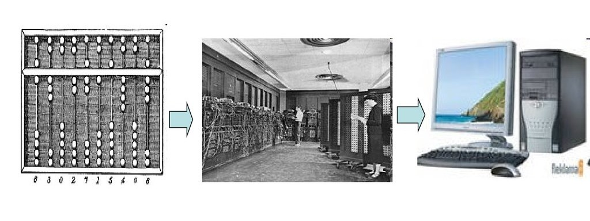

История развития ЭВМ

Интересные факты о первых компьютерах
12 августа 1981 года IBM выпустила первый персональный компьютер. С тех пор ПК сильно изменились. Мы решили вспомнить,
какими были самые первые компьютеры, и собрали интересные факты о них.
- Первые компьютеры были очень больших размеров. Вес одного составлял порядка 30 тонн. Для одного компьютера требовалась
комната внушительных размеров, заставленная шкафами с электронным оборудованием. Компьютеры работали на больших электронных лампах,
которые немало стоили.
- Один компьютер обслуживал целый штат инженеров, необходимо было нужным образом подсоединить многочисленные провода,
на что уходило много времени.
- Первые микропроцессоры могли обрабатывать одновременно лишь 4 бита информации. Их изобрел Маршиан Эдвард Хофф в 1970 году.
Через три года вышел уже 8-битовый процессор. Именно на его основе работал первый коммерчески распространяемый компьютер
Альтаир-8800. Его оперативная память была всего 256 байт (для сравнения, сейчас сложно представить компьютер с памятью
меньше гигабайта примерно = 10 000 000 000 байтов).
- В Альтаире-8800 не было клавиатуры и экрана. Однако его стали активно раскупать. За первый месяц продали больше тысячи
комплектов. Кстати, клавиатуру и экраны наиболее состоятельные люди могли купить отдельно. Комплект был не из дешевых.
- Когда IBM выпустила первый персональный компьютер, никто не думал, что удастся продать много экзепляров. К удивлению
разработчиков, ПК стали расходиться, как горячие пирожки. Их даже не успевали производить.
- Интересно, что до сих пор персональные компьютеры производят по тем самым стандартам. Модель IBM PC является эталоном
для всего парка персональных компьютеров современного мира.
- Первый ПК фирмы IBM стоил около $3.000 с черно-белым дисплеем, а с цветным - $6.000. Конфигурация первого IBM PC:
процессор Intel 8088 с частотой 4,77 МГц и 29 тысячами транзисторов (для сравнения: современный процессор Intel Pentium 4
содержит около 42 миллионов транзисторов), 64 Кб оперативной памяти, 1 флоппи-дисковод емкостью 160 Кб (на нем помещалось 23
страницы энциклопедии), звук - простейший встроенный динамик. В то время большинство компьютеров все еще были 8-разрядными.